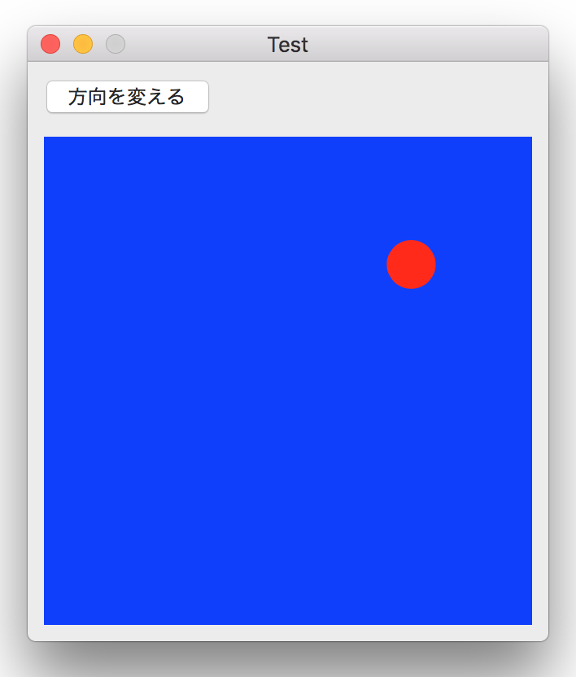

跳ね返るボールのアニメーション
CABasicAnimationクラスを使う

画像をクリックすると動画になります。
実装のポイント
CABasicAnimationクラスを利用したアニメーションとは、ある点からある点までの図形の移動のことである。
ボールの移動の単位は「Timerを利用した跳ね返るボールのアニメーション」と同様に、距離４ピクセルのベクトルとして表現する。跳ね返りの仕組みも同様である。一つのアニメーションは一つのベクトル単位と対応し、アニメーションを連続して実行することによりボールを移動させている。
アニメーションを連続して実行するには、ひとつのアニメーションが終わったあと、次のアニメーションを起動させる必要がある。これは CAAnimationDelegate の animationDidStopメソッドにより得られるアニメーションの終了通知をトリガーとしている。
この方法ではやはりパフォーマンスがよくないので、ボールの移動速度は劣る。別の方法として、壁から壁までの移動をひとつのアニメーションとしてしまえば良いのだが、跳ね返り処理の仕方が思いつかなかったので諦めてしまった。
毎回のアニメーションの開始時には、ボールの表示位置（position）にアニメーションの開始位置（fromValue）を設定すること。これを忘れると毎回一瞬だけボールが初期位置に現れて画面がちらつく。